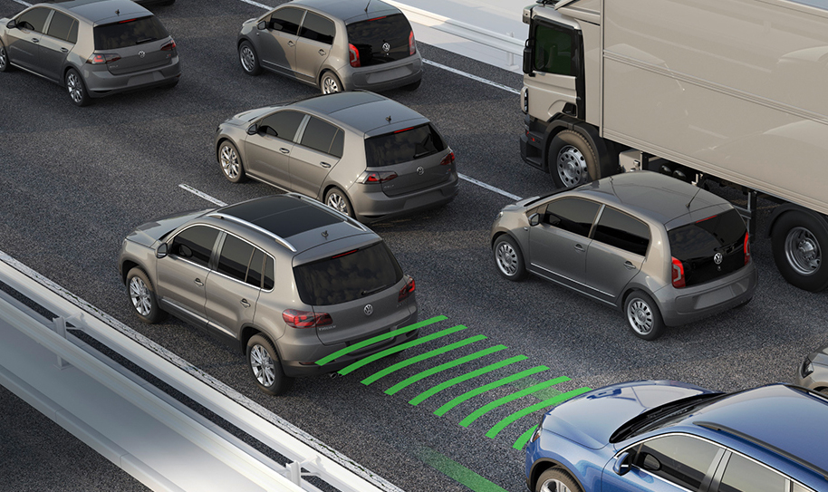
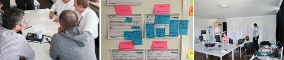
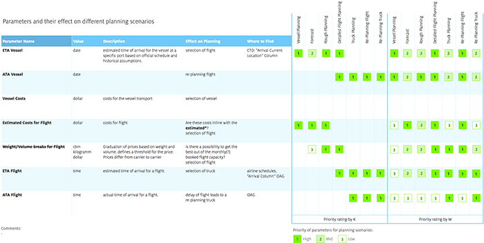
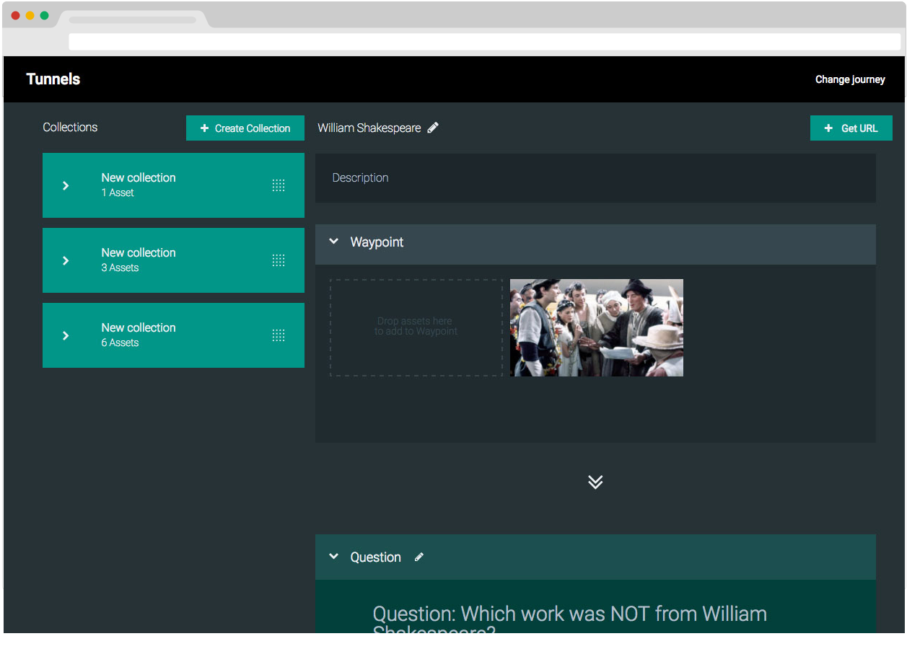
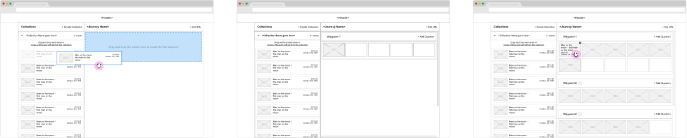
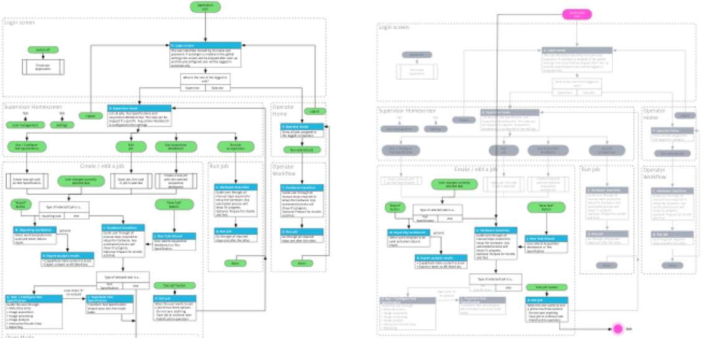

Stephan brings strong user experience design skills along with the ability to analyze and to craft strategic design solutions. In over 9 years of international experience, he has been driving innovation alongside engineers, software architects and developers, designing interfaces for a wide range of businesses.
User Research
Facilitate workshops with clients and end-users. Prepare, conduct and evaluate qualitative user research. Visualize and organize findings to communicate demands to product stakeholders.
Requirement Analysis
Crafting User Stories, create User Story Mappings and Prototypes to validate Requirements with stakeholders and end-users. Prototyping to get quick feedback in the early stages of the design phase.
UI Design
Documenting design concepts from user flows to atomized control behaviour in order to prepare development and support dev teams in sprints. Experienced in using and creating design frameworks for mobile, desktop and embedded applications.
Clients


Qualitative User Research, Information Architecture, Use Case Definition, UI Specification, QML Prototyping
High Voltage Measurement Systems
Baur
Helped planning and conducting stakeholder interviews, user research, concept and design of in-car devices for the austrian based testing and mesaurement technology provider BAUR. Led the interaction design specification for the new BAUR Cable Test Van Triton and created QML prototypes for mobile measurement units.


Concept Development, Information Architecture, UI concept and specification
Microscopy
Zeiss

Developed multiple design concepts of operating software for conducting image acquisition, processing and analysis. Products ranging from Light to Scanning Electron Microscopes dealing with topography and particle analysis.


Group Research
Volkswagen
Planned and led user research for new VW services. Helped VW to gather qualitative insights and to inform VW about new opportunity areas in VW's Service Innovation Team.

Qualitative User Research

Information architecture, Use Case definition, UI specification for iOS and web services
Private Wealth Management
BBVA
Worked in Madrid for spanish bank BBVA on several applications for two iOS platforms. Tasks were to conceptualize the interaction paradigms, underlying hierarchy and to create detailed specifications.


Information Architecture, Use Case Definition, UI concept and specification for iOS and Android devices
Smart Home Division
Bosch
Worked for the german multinational engeneering and electronics company Bosch on various projects. Helped to conceptualize smartphone and tablet apps for their new smart home system.


Automotive Aftermarket
Bosch
Design Concept and QML based prototype for the next generation of Bosch's test benches for common rail injectors. After validating the design concept with the Products Owners the protoype was used to conduct end user tests with selected Bosch clients.

Information Architecture, UI concept, QML prototyping


Research and Education Space
BBC
Concept for a prototype on behalf of BBC's Research and Eductation Space (RES). The aim was to develop a concept and prototype to improve access and use of BBC's archive as an online educational resource for teaching, learning and research.

Information architecture, Use Case definition, UI Specification